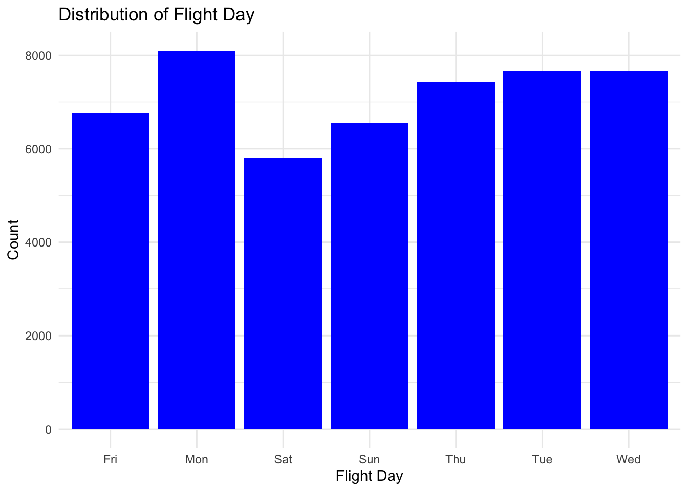
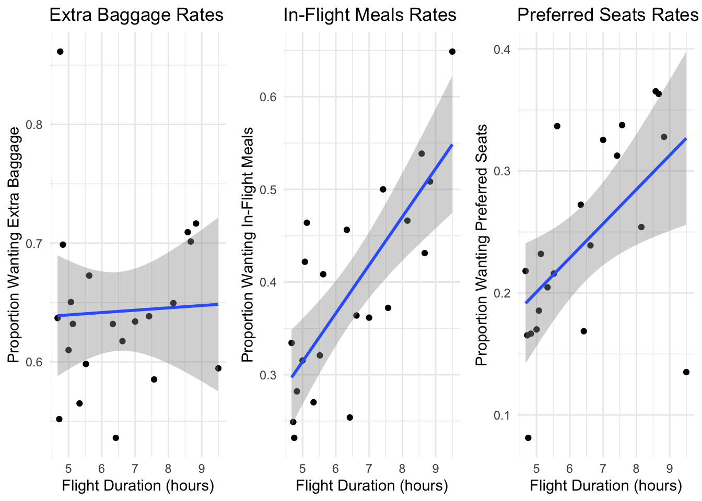

Exploratory Data Analysis (EDA)
EDA is a necessary step in understanding the underlying structure and patterns within our dataset. By employing various statistical and graphical techniques, EDA helps in identifying key relationships, trends, and anomalies that can inform further analysis and model development. In this section, we will explore the characteristics of our data on passenger preferences for air travel upgrades, focusing on how different features influence the choices for extra baggage, in-flight meals, and preferred seating. The insights gained from EDA will provide a solid foundation for building predictive models
Data Distribution of Predictive Features (X)
In this section, we will examine the data distribution of key predictive features (X) that influence passenger preferences for air travel upgrades. This analysis will help us understand how these features interact and contribute to predicting passenger choices for additional services.
Distribution of different trip types among passengers
The bar graph illustrates the distribution of different trip types among passengers. The trip types include CircleTrip, OneWay, and RoundTrip. The data reveals a significant skew towards RoundTrip bookings, which dominate the dataset with nearly 50,000 instances. In contrast, CircleTrip and OneWay bookings are comparatively rare.
Distribution of Sales Channel and Booking Completion
The first plot shows the distribution of sales channels used by passengers for booking. The two categories are “Internet” and “Mobile.”
Internet: The majority of bookings, over 40,000, are made through the internet. This indicates a strong preference for online booking among passengers.
Mobile: A smaller segment, significantly less than 10,000, uses mobile devices for booking. This highlights a potential area for growth in mobile bookings.
The second plot illustrates the distribution of booking completion status, categorized as 0 (incomplete) and 1 (complete).
Incomplete Bookings (0): The majority of instances, around 40,000, represent incomplete bookings. This suggests a high drop-off rate during the booking process.
Complete Bookings (1): A smaller number, significantly less than 10,000, indicate completed bookings. This shows that a relatively small proportion of bookings are finalized.
Description of Distribution of Flight Day
The bar graph shows the distribution of flight days, indicating how many flights occur on each day of the week.
Monday: Has the highest number of flights, with counts slightly above 8,000. Thus, Monday is the busiest day for flights.
Tuesday and Wednesday: These days also have high counts, slightly below 8,000, indicating significant travel activity. Thursday and Sunday: Both days show moderate flight activity, with counts around the 7,000 mark.
Friday: Shows slightly lower flight counts compared to other weekdays, with counts around 6,500.
Saturday: Has the lowest flight count, below 6,000, indicating it is the least busy day for flights.

Correlation Heatmap: Relationship Between Variables of Interest
The correlation heatmap visualizes the relationships between various variables related to passenger preferences for air travel upgrades. Each cell in the heatmap represents the correlation coefficient between two variables, with values ranging from -1 to 1. Darker shades of blue indicate a stronger positive correlation, while darker shades of red indicate a stronger negative correlation.
Key Observations:
Length of Stay vs. Extra Baggage: There is a slight positive correlation, suggesting that passengers with longer stays tend to opt for extra baggage.
Purchase Lead vs. Extra Baggage: There is a noticeable negative correlation, indicating that passengers who book further in advance are less likely to select extra baggage.
Length of Stay vs. In-Flight Meals and Preferred Seats: Both show positive correlations, implying that longer stays increase the likelihood of choosing these services.
Purchase Lead vs. Preferred Seats and In-Flight Meals: Both show negative correlations, meaning advance bookers are less likely to choose these additional services.
This heatmap provides a clear overview of how different factors, such as trip duration and booking behavior, influence passengers’ choices for ancillary services. Understanding these relationships can help airlines optimize their service offerings and improve customer satisfaction.
Target Variables (Y) vs. Predictive Features (X)
In this section, we examine the relationships between our target variables (Y) and various predictive features (X) to better understand passenger preferences for air travel upgrades. By analyzing these relationships, we aim to uncover patterns that can help predict the likelihood of passengers opting for additional services such as extra baggage, in-flight meals, and preferred seating.
Number of Passengers and Service Preferences
Extra Baggage Rates: Positive trend; larger groups more likely to want extra baggage.
In-Flight Meals Rates: Slight negative trend; larger groups less likely to want in-flight meals.
Preferred Seats Rates: Clear negative trend; larger groups less likely to choose preferred seats.
Flight Duration and Service Preferences
Extra Baggage Rates: Slight positive trend; longer flights slightly increase extra baggage demand.
In-Flight Meals Rates: Clear positive correlation; longer flights increase in-flight meal demand.
Preferred Seats Rates: Positive correlation; longer flights increase preferred seat selection.

Purchase Lead Time and Service Preferences
Extra Baggage Rates: Negative trend; early bookers less likely to want extra baggage.
In-Flight Meals Rates: Negative trend; early bookers less likely to want in-flight meals.
Preferred Seats Rates: Negative trend; early bookers less likely to select preferred seats.
Length of Stay and Service Preferences
Extra Baggage Rates: Slight decrease as length of stay increases.
In-Flight Meals Rates: Positive correlation; longer stays increase the likelihood of wanting in-flight meals.
Preferred Seats Rates: Positive correlation; longer stays increase the likelihood of choosing preferred seats.

Relationship between variables of interest
The first set of graphs compares the proportion of passengers wanting in-flight meals and preferred based on their baggage selection. The left graph indicates that passengers with extra baggage are more likely to want in-flight meals compared to those without extra baggage (0). Similarly, the right graph shows that a higher proportion of passengers with extra baggage (1) want preferred seat.
The second set of graphs examines the proportion of passengers wanting extra baggage and preferred seats based on their in-flight meal preferences. The left graph demonstrates that passengers who opt for in-flight meals (1) have a higher proportion of wanting extra baggage than those who do not want in-flight meals (0). The right graph reveals that passengers wanting in-flight meals are also more likely to choose preferred seats.
The third set of graphs explores the proportion of passengers wanting in-flight meals and preferred seats based on their extra baggage preferences. The left graph shows that passengers opting for extra baggage (1) have a higher proportion of wanting in-flight meals compared to those who do not (0). The right graph indicates that passengers with extra baggage are also more inclined to select preferred seats.
These visualizations highlight the interrelationships between various ancillary services, suggesting that passengers who opt for one additional service are more likely to opt for others.